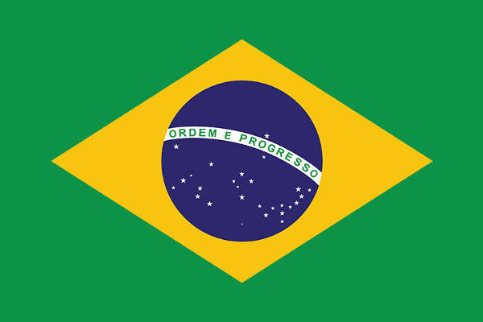

Melissa A. Vieira
About Me
My name is Melissa and I go by Mel. I born and live in Rio Grande do Sul, Brazil. I am currently study Development Software in BYU Pathway Worldwide. I love my 3 cats, I love nerds things like animes, rpgs, marvel movies and I love to travel with my family.
Brazil

Brazil, a vast South American country, stretches from the Amazon Basin in the north to the vineyards and the gigantic Iguazu Falls in the south. The capital is Brasília. In Rio de Janeiro has symbolized by its 38-meter-high Christ the Redeemer statue atop Corcovado Mountain,is a famous state for the bustling beaches of Copacabana and Ipanema, as well as its immense and lively Carnival, with parades of floats, extravagant costumes, and samba.